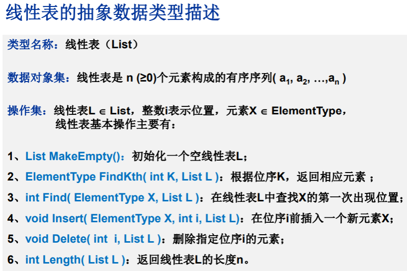
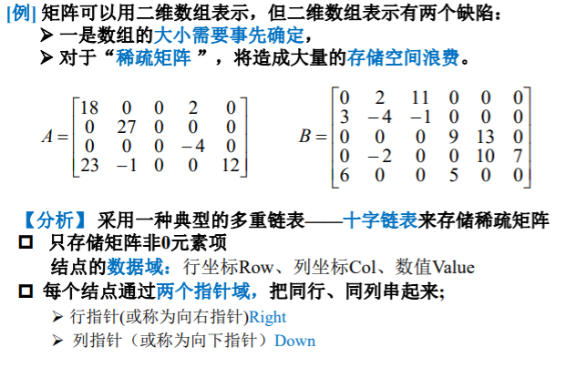
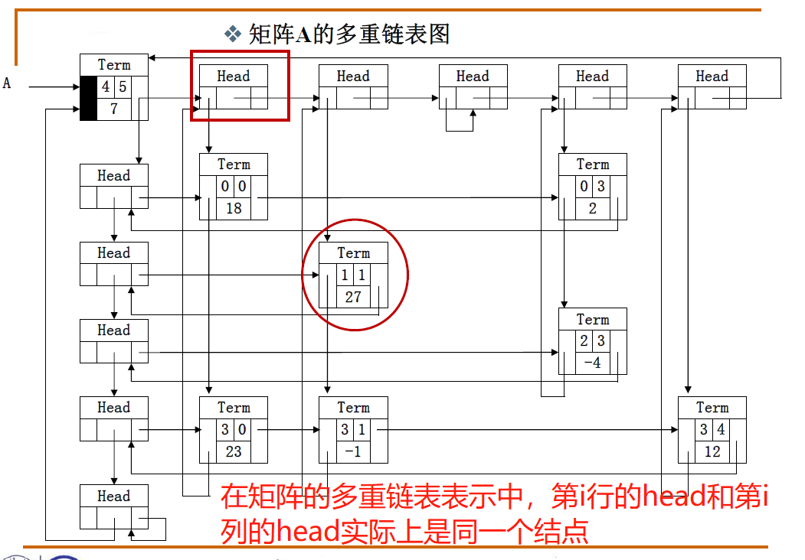
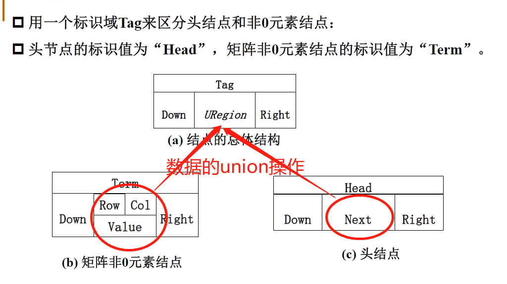

算法
线性结构
线性结构是一个有序数据元素的集合。 常用的线性结构有：线性表，栈，队列，双队列，串(一维数组)。 关于广义表、数组(高维)，是一种非线性的数据结构。 常见的非线性结构有：二维数组，多维数组，广义表，树(二叉树等)，图
特征
- 集合中必存在唯一的一个"第一个元素"；
- 集合中必存在唯一的一个"最后的元素"；
- 除最后元素之外，其它数据元素均有唯一的"后继"；
- 除第一元素之外，其它数据元素均有唯一的"前驱"。
数据结构中线性结构指的是数据元素之间存在着“一对一”的线性关系的数据结构。
如（a0,a1,a2,.....,an）,a0为第一个元素，an为最后一个元素，此集合即为一个线性结构的集合。 相对应于线性结构，非线性结构的逻辑特征是一个结点元素可能对应多个直接前驱和多个后继。
线性结构
什么是线性表？
多项式表示问题的启示：
- 同一个问题可以有不同的表示（存储）方式
- 有一类共性问题：有序线性序列的组织和管理
“线性表”：由同类型数据元素构成有序序列的线性结构
- 表中元素个数称为线性表的长度
- 线性表没有元素时，称为空表
- 表起始位置称为表头，表结束位置称表尾

线性表的链式存储实现
- 不要求逻辑上相邻的两个元素物理上也相邻；通过“链”建立起数据元素之间的逻辑关系。
- 插入、删除不需要移动数据元素，只需要修改“链”。
广义表
我们知道了一元多项式的表示，那么二元多项式又该如何表示？
- 广义表是线性表的推广
- 对于线性表而言，n个元素都是基本的单元素；
- 广义表中，这些元素不仅可以是单元素也可以是另一个广义表。
多重链表
链表中的节点可能同时隶属于多个链
- 多重链表中结点的指针域会有多个，如前面例子包含了Next和SubList两个指针域；
- 但包含两个指针域的链表并不一定是多重链表，比如在双向链表不是多重链表。
- 多重链表有广泛的用途：基本上如树、图这样相对复杂的数据结构都可以采用多重链表方式实现存储。

 这就是稀疏矩阵用十字链表解决的思路
